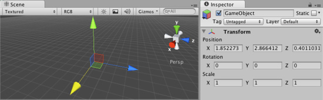
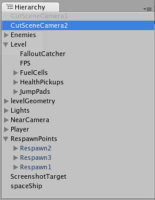

Transforms
Transforms are a key Component in every GameObject. They dictate where the GameObject is positioned, how it is rotated, and its scale. It is impossible to have a GameObject without a Transform. You can adjust the Transform of any GameObject from the Scene View, the Inspector, or through Scripting.
The remainder of this page's text is from the Transform Component Reference page.
Transform
The Transform Component determines the Position, Rotation, and Scale of each object in the scene. Every object has a Transform.
The Transform Component is editable in the Scene View and in the Inspector
Properties
| Position | Position of the Transform in X, Y, and Z coordinates. |
| Rotation | Rotation of the Transform around the X, Y, and Z axes, measured in degrees. |
| Scale | Scale of the Transform along X, Y, and Z axes. Value "1" is the original size (size at which the object was imported). |
All properties of a Transform are measured relative to the Transform's parent (see below for further details). If the Transform has no parent, the properties are measured relative to World Space.
Using Transforms
Transforms are always manipulated in 3D space in the X, Y, and Z axes. In Unity, these axes are represented by the colors red, green, and blue respectively. Remember: XYZ = RGB.
Color-coded relationship between the three axes and Transform properties
Transforms can be directly manipulated in the Scene View or by editing properties in the Inspector. In the scene, you can modify Transforms using the Move, Rotate and Scale tools. These tools are located in the upper left-hand corner of the Unity Editor.
The View, Translate, Rotate, and Scale tools
The tools can be used on any object in the scene. When you click on an object, you will see the tool gizmo appear within it. The appearance of the gizmo depends on which tool is selected.
All three Gizmos can be directly edited in the Scene View.
When you click and drag on one of the three gizmo axes, you will notice that its color changes. As you drag the mouse, you will see the object translate, rotate, or scale along the selected axis. When you release the mouse button, the axis remains selected. You can click the middle mouse button and drag the mouse to manipulate the Transform along the selected axis.

Any individual axis will become selected when you click on it
Any individual axis will become selected when you click on it
Around the centre of the Transform gizmo are three coloured squares. These allow you to drag the Transform in a single plane (ie, the object will move in two axes but be held still in the third axis).
Dragging in the XZ plane
Parenting
Parenting is one of the most important concepts to understand when using Unity. When a GameObject is a Parent of another GameObject, the Child GameObject will move, rotate, and scale exactly as its Parent does. Just like your arms are attached to your body, when you turn your body, your arms move because they're attached. Any object can have multiple children, but only one parent.
You can create a Parent by dragging any GameObject in the Hierarchy View onto another. This will create a Parent-Child relationship between the two GameObjects.

Example of a Parent-Child hierarchy. GameObjects with foldout arrows to the left of their names are parents.
Example of a Parent-Child hierarchy. GameObjects with foldout arrows to the left of their names are parents.
In the above example, we say that the arms are parented to the body and the hands are parented to the arms. The scenes you make in Unity will contain collections of these Transform hierarchies. The topmost parent object is called the Root object. When you move, scale or rotate a parent, all the changes in its Transform are applied to its children as well.
It is worth pointing out that the Transform values in the Inspector of any Child GameObject are displayed relative to the Parent's Transform values. These are also called the Local Coordinates. Through scripting, you can access the Global Coordinates as well as the local coordinates.
You can build compound objects by parenting several separate objects together, for example, the skeletal structure of a human ragdoll. You can also achieve useful effects with simple hierarchies. For example, if you have a horror game that takes place at night, you can create an effective atmosphere with a flashlight. To create this object, you would parent a spotlight Transform to the flashlight Transform. Then, any alteration of the flashlight Transform will affect the spotlight, creating a convincing flashlight effect.
Performance Issues and Limitations with Non-Uniform Scaling
Non-uniform scaling is when the Scale in a Transform has different values for x, y, and z; for example (2, 4, 2). In contrast, uniform scaling has the same value for x, y, and z; for example (3, 3, 3). Non-uniform scaling can be useful in a few select cases but should be avoided whenever possible.
Non-uniform scaling has a negative impact on rendering performance. In order to transform vertex normals correctly, we transform the mesh on the CPU and create an extra copy of the data. Normally we can keep the mesh shared between instances in graphics memory, but in this case you pay both a CPU and memory cost per instance.
There are also certain limitations in how Unity handles non-uniform scaling:
- Certain components do not fully support non-uniform scaling. For example, for components with a radius property or similar, such as a Sphere Collider, Capsule Collider, Light, Audio Source etc., the shape will never become elliptical but remain circular/spherical regardless of non-uniform scaling.
- A child object that has a non-uniformly scaled parent and is rotated relative to that parent may have a non-orthogonal matrix, meaning that it may appear skewed. Some components that do support simple non-uniform scaling still do not support non-orthogonal matrices. For example, a Box Collider cannot be skewed so if its transform is non-orthogonal, the Box Collider will not match the shape of the rendered mesh accurately.
- For performance reasons, a child object that has a non-uniformly scaled parent will not have its scale/matrix automatically updated while rotating. This may result in popping of the scale once the scale is updated, for example if the object is detached from its parent.
Importance of Scale
The scale of the Transform determines the difference between the size of your mesh in your modeling application and the size of your mesh in Unity. The mesh's size in Unity (and therefore the Transform's scale) is very important, especially during physics simulation. There are three factors that can affect the scale of your object:
- The size of your mesh in your 3D modeling application.
- The Mesh Scale Factor setting in the object's Import Settings.
- The Scale values of your Transform Component.
Ideally, you should not adjust the Scale of your object in the Transform Component. The best option is to create your models at real-life scale so you won't have to change your Transform's scale. The next best option is to adjust the scale at which your mesh is imported in the Import Settings for your individual mesh. Certain optimizations occur based on the import size, and instantiating an object that has an adjusted scale value can decrease performance. For more information, see the section about optimizing scale on the Rigidbody component reference page.
Hints
- When parenting Transforms, set the parent's location to <0,0,0> before adding the child. This will save you many headaches later.
- Particle Systems are not affected by the Transform's Scale. In order to scale a Particle System, you need to modify the properties in the System's Particle Emitter, Animator and Renderer.
- If you are using Rigidbodies for physics simulation, there is some important information about the Scale property on the Rigidbody component reference page.
- You can change the colors of the Transform axes (and other UI elements) from the preferences ( and then select the panel).
- It is best to avoid scaling within Unity if possible. Try to have the scales of your object finalized in your 3D modeling application, or in the Import Settings of your mesh.
Page last updated: 2007-11-16